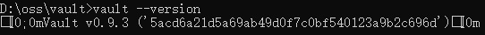

2 私密信息管理利器 HashiCorp Vault——启动和读写
Vault 打包为单个可执行文件，因此运行非常简单，只需要下载并解压即可。你可以从上面的下载地址找到各个平台的下载文件包。
Windows 平台的特别说明
Vault 也提供了 Windows 平台的版本（X86/X64），但客户端并未特别去兼容 Windows 控制台。因此，如果你在 Windows 下运行 vault 的话，可能会看到这样怪模怪样的输出：

有经验的朋友会明白，这些看似乱码的东西实际上是控制字符，但 Windows 控制台并不能处理它们。因此，Windows 用户要么使用其他控制台程序，比如 ConEmu/Cmder 等（请自行尝试）；要么在 Linux/Mac 平台运行，避免这个辣眼睛的显示效果。
由于上述原因，后续如无特别说明的话，所有命令统一在 Linux 平台上运行
运行 Vault
解压文件完毕后，你可以从命令行运行:
$ vault --version
Vault v0.9.3 ('5acd6a21d5a69ab49d0f7c0bf540123a9b2c696d')
为了方便以后使用，也可以考虑把 vault 路径添加到 PATH 环境变量中。
不带参数运行 vault 会列出客户端支持的各种命令：
$ vault
Usage: vault <command> [args]
Common commands:
read Read data and retrieves secrets
write Write data, configuration, and secrets
...
Vault 也提供了自动完成功能（目前支持Bash/Zsh）：
$ vault -autocomplete-install
和多数常规 Linux 命令的规范不同，Vault 命令行的复杂参数是单-开头的，不是--。Shell 重度用户需要适应一下。
启动 Vault 服务
Vault 是服务器-客户端的架构，但所有功能都包含在单一的可执行文件中。
为了运行 Vault，我们需要并排开两个终端窗口：一个运行 服务器，一个运行客户端。
为了方便本地开发与测试，Vault 服务器提供了开发模式。开发模式下不需要额外的配置，所有数据保存在内存中，从命令行可以直接访问。当然，相应的结果是开发模式下的安全性很差，可以不受限制的访问几乎任何数据，所以开发模式仅供学习和本地测试使用，生产环境中绝对不要使用。
使用如下命令，用开发模式启动服务器：
$ vault server -dev
==> Vault server configuration:
Cgo: disabled
Cluster Address: https://127.0.0.1:8201
Listener 1: tcp (addr: "127.0.0.1:8200", cluster address: "127.0.0.1:8201", tls: "disabled")
Log Level: info
Mlock: supported: true, enabled: false
Redirect Address: http://127.0.0.1:8200
Storage: inmem
Version: Vault v0.9.3
Version Sha: 5acd6a21d5a69ab49d0f7c0bf540123a9b2c696d
WARNING! dev mode is enabled! In this mode, Vault runs entirely in-memory
and starts unsealed with a single unseal key. The root token is already
authenticated to the CLI, so you can immediately begin using Vault.
You may need to set the following environment variable:
$ export VAULT_ADDR='http://127.0.0.1:8200'
The unseal key and root token are displayed below in case you want to
seal/unseal the Vault or re-authenticate.
Unseal Key: ***
Root Token: ***
Development mode should NOT be used in production installations!
==> Vault server started! Log data will stream in below:
2018/02/08 11:36:57.917623 [INFO ] core: security barrier not initialized
...
你可以看到服务器输出了相当多的内容。其中，我们重点关注下列信息：
- 服务器侦听地址为
127.0.0.1:8200（还有一个端口 8201 用于集群使用，目前我们不关注）； - 数据存储使用内存引擎（inmem）。这意味着开发模式下所有数据在关闭服务器后都不会保留；
- 命令行客户端访问服务器，需要首先设置环境变量（
VAULT_ADDR）； - Unseal Key 在生产模式下很重要，但是开发环境下暂时用不到；
Root Token 值得重点说明一下。
Vault 提供多种验证/授权客户端的机制，其中 Token 是默认的验证手段。无论开发还是生产环境，服务器启动时都会生成一个 Root Token，该 Token 相当于 Linux 系统中的 root user，具有最高的访问权限。
使用 Root Token 登录系统的用户可以生成另外的 Token，并且为这些 Token 设置特定的访问权限。
这就是 Vault 的认证/授权机制。在开发模式下，用户默认是使用 Root Token 登录的，当然也可以在分配新的 Token 之后，使用新 Token 重新登录。
现在，你应该把 Root Token 记录在方便访问的地方，因为日志多了以后，再回头找这个信息就困难了。
$ export VAULT_ADDR='http://127.0.0.1:8200'
$ vault status
Key Value
--- -----
Seal Type shamir
Sealed false
Total Shares 1
Threshold 1
Version 0.9.3
Cluster Name vault-cluster-d71c802b
Cluster ID 36560e34-acd4-141d-c299-9a6d4ba0091b
HA Enabled false
看到上面的信息，说明服务器运行正常。有两点值得一提：
Sealed=false，说明数据存储没有密封，可以读写（生产模式下需要特定的初始化之后才能解封）；HA Enabled=false，因为开发模式的存储引擎（内存）不支持集群。
读写数据
服务器和客户端均已就位，接下来我们可以往里面读写数据了：
$ vault write secret/hello value=world
Success! Data written to: secret/hello
$ vault write secret/hello excited=yes name=user
Success! Data written to: secret/hello
$ vault read secret/hello
Key Value
--- -----
refresh_interval 768h
excited yes
name user
读写数据使用 read/write 命令。参数 secret/hello这是一个路径（Path）。
Vault 中用 Path 区分不同数据的存放位置。一个 Path 下可以包含多个键值对，但需要注意的是 write 命令是覆盖式的而不是追加式的，所以第一条命令写入的值会被后来的所覆盖，因此你必须确保在同一个命令中一次性写入所有的内容。
read 命令读出了刚才写入的内容，另外还有一条额外的信息 refresh_internal。
这是由系统赋予的一个特殊值，表示该数据的有效时间（768小时=32天），到期后该数据将被清除。我们还可以将数据输出为 Json 格式，以便观察更详细的信息，同时也方便支持 Json 格式的库读取：
$ vault read -format=json secret/hello
{
"request_id": "0893c6ee-e38c-82da-9d75-373c43d4ec98",
"lease_id": "",
"lease_duration": 2764800,
"renewable": false,
"data": {
"excited": "yes",
"name": "user"
},
"warnings": null
}
我们设置的值在 Json 数据的 data 节点下。还可以看到，刚才输出的 refresh_interval 实际上是该数据租期（Lease）的一种表达形式。
租期是 Vault 用来表示私密数据有效期的一个概念。租期的内部时间（lease_duration）是用秒来记录的，你可以自己换算一下。由于该数据是不可更新（Renewable）的，因此 lease_id 为空。后面我们还会讲到如何管理 Lease。
如果我们不再需要该数据，可以用 delete 命令删除它：
$ vault delete secret/hello
Success! Data deleted (if it existed) at: secret/hello
$ vault read secret/hello
No value found at secret/hello
在上述例子中，我们使用了 secret/hello 路径，这个路径并不是随意指定的。默认情况下，你只能把私密数据保存在以 secret/ 为前缀的路径下，否则会出现下面的错误信息：
$ vault write foo/bar a=b
Error writing data to foo/bar: Error making API request.
URL: PUT http://127.0.0.1:8200/v1/foo/bar
Code: 404. Errors:
* no handler for route 'foo/bar'
从出错信息可以发现，Vault 服务器/客户端之间实际上是 RESTful 形式的 HTTP 通信。